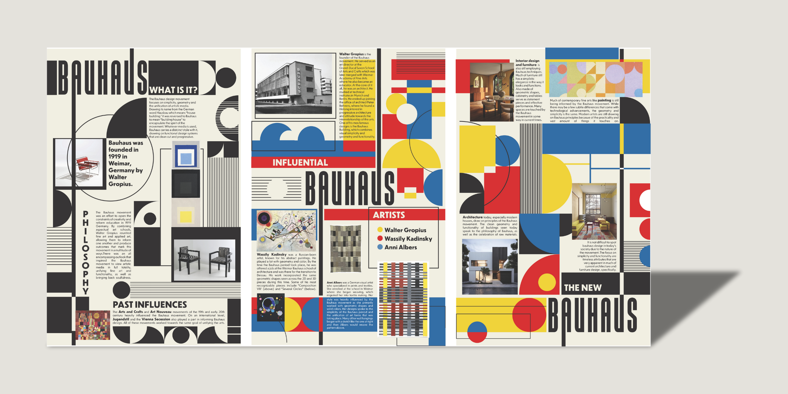
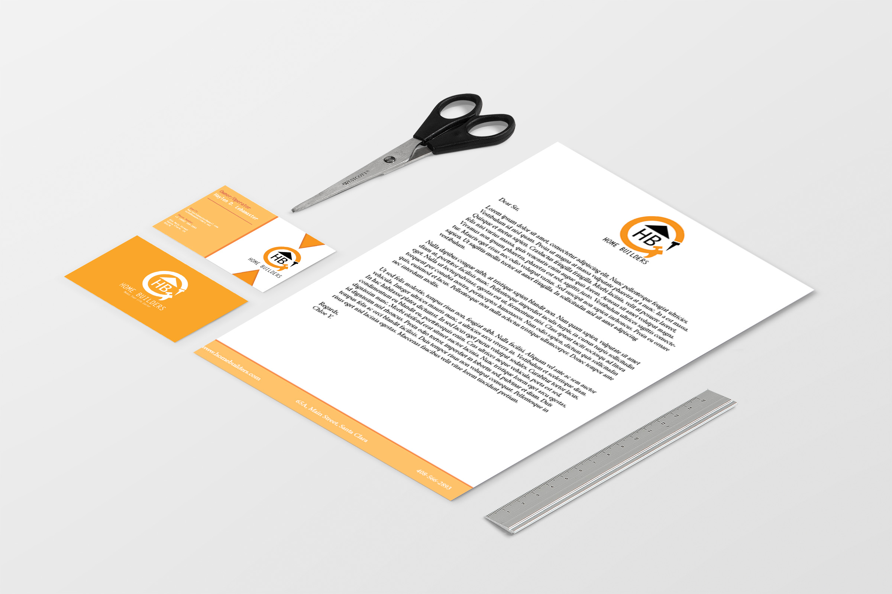
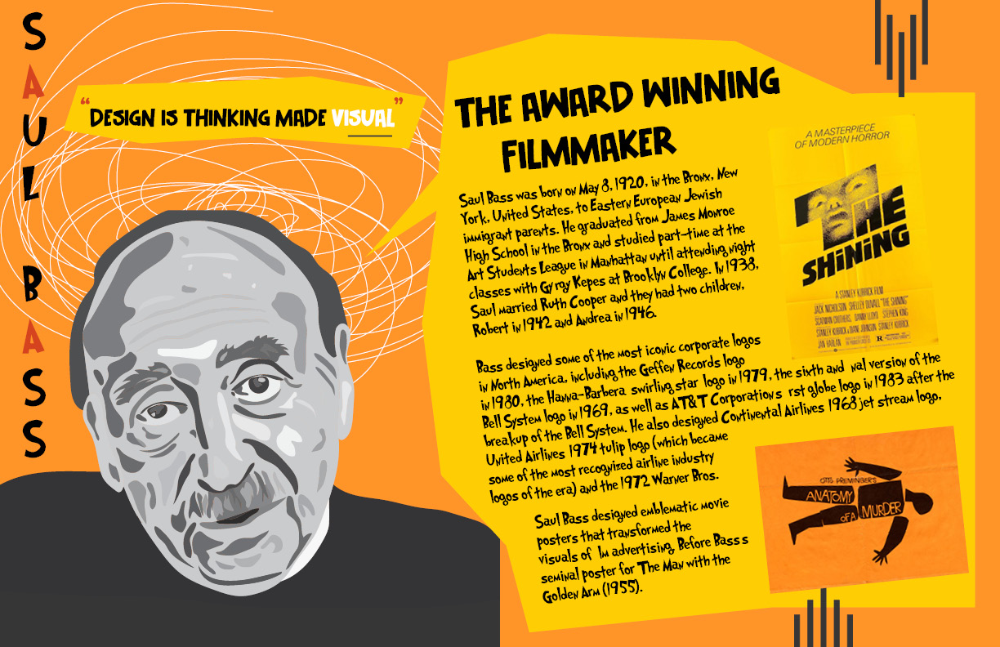

⋆˚꩜｡About Me
Chloe Yap is an international Digital Media Artist from Malaysia that also has a background in Graphic Design. She loves to experiment with different mediums and also enjoys photography on the side whenever she goes travelling around the world. Growing up, she never thought she would take the art path as someone who is in a family who are mostly in tech. It all changed when the pandemic started when she grabbed a pencil and paper, started doodling characters she loved while watching her favorite shows. That sparked something in her to pursue this as a career and found her passion in designing and creating art in the future. While studying in San Jose State University, many professionals had taught her skills that she never knew she had and encouraged her to move forward with her passion.
My Work


Bauhaus Magazine
This is an editorial design project. It showcases a Bauhaus-inspired magazine.


Home Builder Project
This is a redesign of a home builder company. I included a cover letter, business cards, and postcards.


Saul Bass Poster
This is a poster design. It showcases a stylized version of Saul Bass and his description.
Contact Me
Email: chloeyaphoyee@gmail.com
Phone: (123) 456-7890